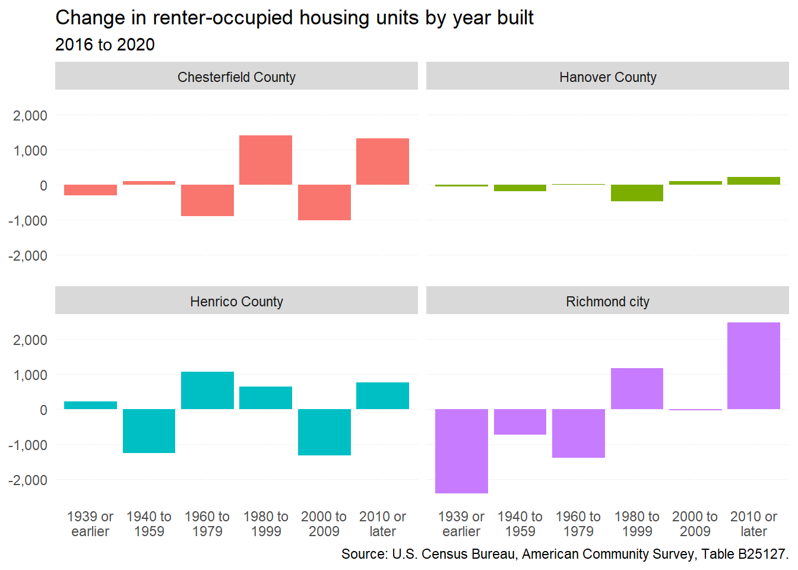

6 Rental homes
6.1 Supply
6.1.1 Change in stock
While many renters across the region do live in multifamily buildings (with 5 or more units), the second largest share of rental housing is single-family housing (either attached or detached). In 2020, over a third (37 percent) of rental housing in the region consisted of single-family housing, while 49 percent was located in buildings with 5 or more units. There has been little change in these percentages since 2016.
Changes in the shares of rental housing have been small — but those changes have been among rental housing with 20 or more units (17 percent in 2016 to 19 percent in 2020) and 2 to 4 unit buildings (14 percent in 2016 down to 13 percent in 2020).
The raw changes in rental housing were most felt in Henrico County and the City of Richmond. In Henrico, there was a 1,930 increase in single-family rental housing and a 1,357 decrease in 2 to 4 unit rental housing (i.e. duplexes, triplexes, and quads).
The City of Richmond saw a contrasting decrease in single-family rentals (-1,921), while also experiencing a 2,134 increase in rental housing located in buildings with 20 or more units. Chesterfield County has seen slight increases in multifamily housing of all types, while Hanover County has not seen much change at all.
6.1.2 Age of stock
Since 2016, the region has seen major changes in the age of its rental stock as existing homes transition from being owned to leased out, or vice-versa. Of note, every locality except for Hanover saw significant increases in the number of renter-occupied homes built between 1980 and 1999.
These homes—now over 20 years old—are likely becoming the target of investors purchasing from homeowners, making certain improvements, and renting them out. In Henrico County, this trend was even more prevalent among homes built between 1960 and 1979.
Conversely, Chesterfield and Henrico each had over 1,000 homes built between 2000 and 2009 change from renter- to owner-occupied. The largest losses in rental stock, however, occurred in Richmond among homes built prior to 1980. Several factors could explain this decline:
- Actual demolition of very old, low-quality homes,
- Duplexes and triplexes converted into single-family homes, and
- Single-family rentals purchased by buyers who now live in the home.

6.1.3 Bedrooms
Rental homes in the Richmond region are most likely to have one or two bedrooms. While the number of one-bedroom apartments has continued to increase (+1,617) from 2016, the number of two-bedroom units has decreased by 2,500.
The increasing supply of one-bedroom apartments coincides with a similar increase in studio apartments—these unit sizes reflect new apartments, largely in Richmond, marketed for college students and other young adults.
The dwindling number of two-bedroom rental homes may reflect small single-family rentals in older neighborhoods transitioning to owner-occupancy, as there is a similar (but much less significant) decline in three-bedroom units.
6.1.4 Production
Construction of multifamily properties (with 5 units or more) has been sporadic since the end of the Great Recession. In all localities aside from Hanover County, there have been waves and dips in the multifamily building construction. Hanover has seen little to no activity throughout the last two decades, while Chesterfield County and Richmond have seen the bulk of activity.
During the latter half of the last decade, Chesterfield County had a boom in multifamily construction — nearing 1,500 units in 2019. Meanwhile, Richmond’s multifamily construction saw dips following the Great Recession and again in 2018, but has largely been up in the last couple years of the 2010s. Although Henrico County had dips in 2016 and 2018, multifamily construction has more often than not been above the 700 unit mark.
6.2 Rental market
6.2.1 Average market asking rent
Rental demand reached a fever pitch amid the ongoing COVID-19 pandemic. With eviction moratoriums and a flow of rental assistance, low supply gave way to historic rent increases. The average market asking rent in the region reached a two-decade high of $1,395 in the first quarter of 2022.
Large quarterly increases in average rents began in early 2021 and have continued to the present. From the first to second quarters of this year, rents increased by $31. However, this relative growth was very near the change in inflation over that same period.
6.2.2 Rents by submarket
Although not adjusted for inflation, rents by submarket show that there are distinct average rents across the region. Since 2010, the steepest increases have occurred in the counties. Northside Richmond remains the least expensive submarket with an average rent of $1,037 in the second quarter of this year, while Midlothian is the most expensive at $1,655.
6.2.3 Rents by bedrooms
Rents in the region have risen the most among three-bedroom and two-bedroom apartments, reflecting continued demand for units that have actually declined in supply since 2016. In contrast, average rents for studio and one-bedroom apartments—which grew by more than 2,700 units since 2016—have increased less than $100 over the last decade when adjusted for inflation.
6.2.4 Rents by age of units
Recently constructed rental housing (built in 2010 and after) leads average asking rents at $1,614. As expected, rental costs correlate to the period in which they were built — with older rental housing being less expensive. Pre-1980 rental housing is roughly $400 cheaper than more recent rental housing.
In the last decade, more recent rental housing had steady and modest increases; only increasing $80 from Q1 2012 to Q2 2022. But older rental housing had much more dramatic increases; increasing an average of $257 in that same time period.
Rental housing built between 1980 and 2009 had especially steep increases during the height of the pandemic (Q1 2020 to Q3 2021). In this time, the average asking rent increased by over $130, while rent increases for newer rental housing and pre-1980 housing increased by less than $100.
6.3 Rental vacancy
For much of the past two decades, vacancy rates have fluctuated seasonally as new people enter and leave the rental housing market. Across the region, submarkets have largely had vacancy rates below ten percent. In 2022, the regional average vacancy rate to-date was five percent.
However, some submarkets in the region have lower than average vacancy rates; Hanover County (1 percent), Eastern Henrico (3 percent), Northside (3 percent), and East End (4 percent) have significantly lower vacancy rates.